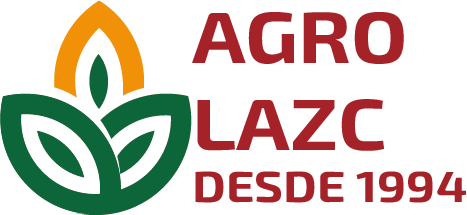

<ion-header color="secondary">
  <ion-toolbar color="secondary">
    <ion-title class="ion-text-center">Cultivos</ion-title>
    <ion-buttons slot="start">
      <ion-button>
        <ion-icon name="cart-outline"></ion-icon>
        <ion-badge color="tertiary" mode="ios">0</ion-badge>
      </ion-button>
    </ion-buttons>
    <ion-buttons slot="end">
      <ion-button>
        <ion-icon name="menu-outline"></ion-icon>
      </ion-button>
    </ion-buttons>
  </ion-toolbar>
</ion-header>

<ion-content>
<div class="container">
  <ion-grid fixed>
    <ion-row>
      <ion-col size="12">
        <picture class="agro_logo">
          
        </picture>
      </ion-col>
    </ion-row>
    
    <ion-row class="ion-align-items-center">
      <ion-col class="cultivo" size="6" sizeLg="3" *ngFor="let cultivo of cultivos">
        
        <h3 class="cultivo_nombre">{{cultivo.nombre}}</h3>
    </ion-col>
    </ion-row>
  </ion-grid>
</div>
</ion-content>

